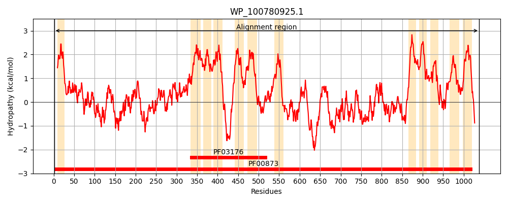
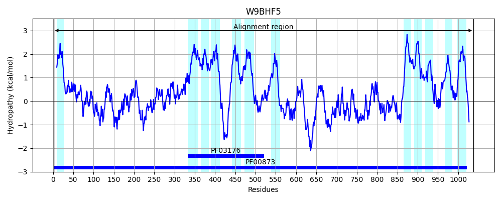
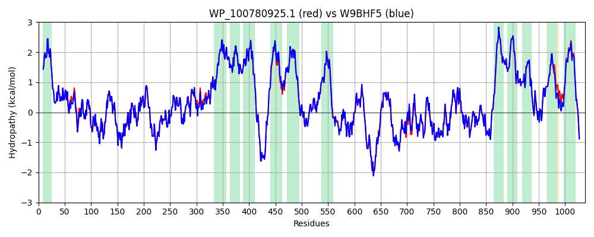

Hit Accession: W9BHF5
Hit TCID: 2.A.6.2.49
Hit Description: gnl|BL_ORD_ID|20700 gnl|TC-DB|W9BHF5|2.A.6.2.49 Multidrug efflux pump subunit AcrB OS=Klebsiella pneumoniae GN=acrB_2 PE=3 SV=1
Mach Len: 1038
e:0.000000
Query TMS Count : 12
Hit TMS Count: 12
TMS-Overlap Score: 13.150000
Predicted Substrates:CHEBI:29696;tigecycline, CHEBI:29696;tigecycline, CHEBI:23888;drug
BLAST Alignment:
Score: 5122 , Bit scores: 1977 bits, E-value: 0.0e+00, Alignment length: 1038, Percentage identity: 99
Query: 1 MPHFFIERPIFAWVIALFIVLTGLLSIPRLPVAQYPEVAPPGIIISVSYPGASPEVMNTSVVSLIEREIASVDNLLYFESSSDTTGMASITVTFKPGTDIKLAQMDLQNQIKIVESRLPQSVRQNGINVEAANSGFLMMVGLKSPSGAYQEADLSDYFARNVTDELRRVPGVGKVQLFGGEKALRIWLDPMKLHSYGLSVTDVLSAISQQNVIVSPGRTGDEPATSSQEVTYPITVKGQLSSVEEFRNITIKSQVSAARVTLADVARVESGLQSYAFGIRENGVPATAAAIQLSPGANAISTASGIRARLAELSGVLPEGMTFTVPFDTAPFVKLSILKVVETFVEAMVLVFFVMLLFLHKIRCTLIPAIVAPVALLGTFTVMLLSGYSINILTMFGMILAIGIIVDDAIVVVENVERLMEDKKMSPQDATREAMREITPAIIGITLVLTAVFIPMAFTSGSVGIIYRQFSISMAISILLSAFLALTLTPALCATLLKPHGIHQGKSSVFSAWFNAHFHRLTSFYATGLGFVLKRTGRMMMIYAALCLALFAGLSTLPSSFIPDEDQGYFMSSIQLPSDATMQRTLKVVDTFEEEIAHRQAVESNIMILGFGFSGSGQNSAMAFTTLKDWKQRKGTTAQEEADHIQSQMANVPDAVTMSLLPPAISDMGTSSGFTYYLQDRGGKGYQALKKAADELIVQANHNPHLTDVYIDGLGEGTSLSLHVDREKAEAMGVSFDEINQTISVAAGSNYVNDYTNNGRVQQVIVQADAPYRMQPEQLLALSVKNRLGQMLPLSTFVTLSWNVAPQQLIRYQGYPAIRITGSSAQGKSSGTAMAAMDNLAKHLPPGFAGEWAGSSLQEKESASQLPGLIVLSVLVVFMVLAALYESWSIPFAVMLVVPLGLLGAVLAVSVTNMTNDVFFKVGLITLIGLSAKNAILIIEFARQLMKEGKSLIDATLTAAKLRLRPILMTSLAFTLGVVPLMLASGASASTQHAIGTGVFGGMISGTLLAILFVPVFFVTITRFTGMRKYRLGNSRNG 1038
MPHFFIERPIFAWVIALFIVLTGLLSIPRLPVAQYPEVAPPGIIISVSYPGASPEVMNTSVVSLIEREI+SVDNLLYFESSSDTTGMASITVTFKPGTDIKLAQMDLQNQIKIVESRLPQSVRQNGINVEAANSGFLMMVGLKSPSGAYQEADLSDYFARNVTDELRRVPGVGKVQLFGGEKALRIWLDPMKLHSYGLSVTDVLSAISQQNVIVSPGRTGDEPATSSQEVTYPITVKGQLSSVEEFRNITIKSQVSAARVTLADVARVESGLQSYAFGIRENGVPATAAAIQLSPGANAISTASGIRARL ELSGVLPEGMTFTVPFDTAPFVKLSILKVVETFVEAMVLVFFVMLLFLHKIRCTLIPAIVAPVALLGTFTVMLLSGYSINILTMFGMILAIGIIVDDAIVVVENVERLMEDKKMSPQDATREAMREITPAIIGITLVLTAVFIPMAF SGSVGIIYRQFSISMAISILLSAFLALTLTPALCATLLKPHGIHQGKSSVFSAWFNAHFHRLTSFYATGLGFVLKRTGRMMMIYAALCLALFAGLSTLPSSF+PDEDQGYFMSSIQLPSDATMQRTLKVVDTFEEEIAHRQAVESNIMILGFGFSGSGQNSAMAFTTLKDW+QRKGTTAQEEADHI+SQMANVPDAVTMSLLPPAISDMGTSSGFTYYLQDRGGKGYQALKKAADELIVQANHNPHL DVYIDGLGEGTSLSLHVDREKAEAMGVSFDEINQTISVAAGSNYVNDYTNNGRVQQVIVQADAPYRMQPEQLLALSVKNRLGQMLPLSTFVTLSWNVAPQQLIRYQGYPAIRITGSSAQGKSSGTAMAAMDNLAKHLPPGFAGEWAGSSLQEKESASQLPGLIVLSVLVVFMVLAALYESWSIPFAVMLVVPLGLLGAVLAVSVTNMTNDVFFKVGLITLIGLSAKNAILIIEFARQLMKEGKSLIDATLTAAKLRLRPILMTSLAFTLGVVPLMLASGAS STQHAIGTGVFGGMISGTLLAI FVPVFFVTITRFTGMRKYRLGNSRNG
Sbjct: 1 MPHFFIERPIFAWVIALFIVLTGLLSIPRLPVAQYPEVAPPGIIISVSYPGASPEVMNTSVVSLIEREISSVDNLLYFESSSDTTGMASITVTFKPGTDIKLAQMDLQNQIKIVESRLPQSVRQNGINVEAANSGFLMMVGLKSPSGAYQEADLSDYFARNVTDELRRVPGVGKVQLFGGEKALRIWLDPMKLHSYGLSVTDVLSAISQQNVIVSPGRTGDEPATSSQEVTYPITVKGQLSSVEEFRNITIKSQVSAARVTLADVARVESGLQSYAFGIRENGVPATAAAIQLSPGANAISTASGIRARLTELSGVLPEGMTFTVPFDTAPFVKLSILKVVETFVEAMVLVFFVMLLFLHKIRCTLIPAIVAPVALLGTFTVMLLSGYSINILTMFGMILAIGIIVDDAIVVVENVERLMEDKKMSPQDATREAMREITPAIIGITLVLTAVFIPMAFASGSVGIIYRQFSISMAISILLSAFLALTLTPALCATLLKPHGIHQGKSSVFSAWFNAHFHRLTSFYATGLGFVLKRTGRMMMIYAALCLALFAGLSTLPSSFLPDEDQGYFMSSIQLPSDATMQRTLKVVDTFEEEIAHRQAVESNIMILGFGFSGSGQNSAMAFTTLKDWRQRKGTTAQEEADHIRSQMANVPDAVTMSLLPPAISDMGTSSGFTYYLQDRGGKGYQALKKAADELIVQANHNPHLADVYIDGLGEGTSLSLHVDREKAEAMGVSFDEINQTISVAAGSNYVNDYTNNGRVQQVIVQADAPYRMQPEQLLALSVKNRLGQMLPLSTFVTLSWNVAPQQLIRYQGYPAIRITGSSAQGKSSGTAMAAMDNLAKHLPPGFAGEWAGSSLQEKESASQLPGLIVLSVLVVFMVLAALYESWSIPFAVMLVVPLGLLGAVLAVSVTNMTNDVFFKVGLITLIGLSAKNAILIIEFARQLMKEGKSLIDATLTAAKLRLRPILMTSLAFTLGVVPLMLASGASDSTQHAIGTGVFGGMISGTLLAIFFVPVFFVTITRFTGMRKYRLGNSRNG 1038 | Protein Hydropathy Plots: |
|---|
|  |  |
Pairwise Alignment-Hydropathy Plot:
|
|---|
|  |